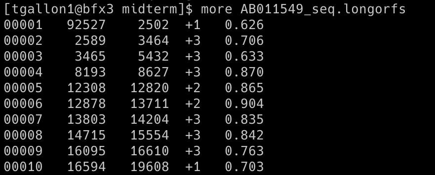

Python Computer Gateway Interface (CGI) Programming
HTML Template
GenBank Reference Annotation vs. Glimmer3
Glimmer was used to predict the genes of a plasmid of the model organism Escherichia coli O157:H7 str. Sakai plasmid pO157 DNA, and the results were then compared with the annotations from GenBank. A CGI script was used to read both the GenBank (reference) annotation and predicted output from Glimmer, and the results were populated in an HTML5-compliant template.
The output includes summary information at the top, including the count of genes in the reference annotation, the count of predicted genes, the count of genes with exact matching coordinates between reference and prediction (5' and 3' agreement), the count of genes with 5' agreement but 3' disagreement, the count of genes with 5' disagreement but 3' agreement, and the count of genes predicted with no overlap to a reference gene. Additionally, a table is displayed showing all gene coordinates of the reference annotation and the corresponding (overlapping) predicted coordinates. Attributes of 'agrees' or 'disagrees' are applied when compared to the reference coordinates, and a consensus field is generated.
Escherichia coli O157:H7 str. Sakai plasmid pO157 DNA, complete sequence: AB011549.2
Glimmer (Gene Locator and Interpolated Markov ModelER) is a Unix-based program used to locate bacterial genes with 99% sensitivity (1). Glimmer identifies coding sequences using interpolated Markov models (IMMs), which make predictions based on a linear combination of probabilities from oligomers of varying lengths. In general, longer oligomers have higher predictive value if sufficient data is available. Glimmer uses Markov models from the 1st through 8th orders and assesses which order to use based on oligomer frequency, giving a higher weight to frequently occurring oligomers. Glimmer uses longer oligomers when possible and creates IMMs for the possible reading frames, which are then used to score orfs and determine coding sequences. Glimmer's use of IMM is advantageous over other programs, such as GeneMark, which uses a fixed-order Markov model. GenMark uses a 5th-order Markov model, predicting nucleotides based on the five previous ones, and may result in unreliable predictions if the 5mer does not frequently occur (2).
The Glimmer3 system was downloaded, and the file was decompressed using the following command: tar xzf glimmer302b.tar.gz
Running the command above creates a directory called glimmer3.02
 The glim302notes.pdf file contains the documentation for running Glimmer.
The glim302notes.pdf file contains the documentation for running Glimmer.
Commands used to run glimmer3
long-orfs -n -t 1.15 AB011549_seq.fasta AB011549_seq.longorfs

extract -t AB011549_seq.fasta AB011549_seq.longorfs > AB011549_seq.train
build-icm -r AB011549_seq.icm < AB011549_seq.train
glimmer3 -o50 -g110 -t30 AB011549_seq.fasta AB011549_seq.icm AB011549_seq

extract -t AB011549_seq.fasta AB011549_seq.predict > AB011549_seq.glimmer
Explanation
Command 1: long-orfs -n -t 1.15 AB011549_seq.fasta AB011549_seq.longorfs
The long-orfs command reads a DNA sequence from a file and provides the coordinates of the long, non-overlapping open reading frames using an amino-acid distribution model. The output can be saved to a separate file or printed to the console. The orfs in the longorfs file are likely to contain genes and can be used as a training set for the build-icm program. The AB011549_seq.fasta was used for this prediction.
It is used as long-orfs [options] <sequence-file> <output-file>
Parameters:
-n (--no_header): Does not include headers in the output
-t 1.15 (--cutoff <x>): Only genes with entropy distance score less than 1.15 will be considered
Output (first ten rows; a total of 42 orfs were identified): AB011549_seq.longorfs 
Command 2: extract -t AB011549_seq.fasta AB011549_seq.longorfs > AB011549_seq.train
The extract program reads a DNA sequence from a file and takes coordinates to output a file containing FASTA sequences of the specified regions.
It is used as extract [options] <sequence-file> <coords>
Parameters:
-t (--nostop): Omit the last 3 characters of each output string
Output: AB011549_seq.train
Command 3: build-icm -r AB011549_seq.icm < AB011549_seq.train
The build-icm program constructs a probability model called interpolated context model (ICM) from a set of sequences.
It is used as build-icm [options] output_file < input_file
Parameters:
-r (--reverse): Use the reverse of input strings to build the ICM model.
Output: AB011549_seq.icm
Command 4: glimmer3 -o50 -g110 -t30 AB011549_seq.fasta AB011549_seq.icm AB011549_seq
The glimmer3 program makes gene predictions based on DNA sequences and the ICM model.
It is used as glimmer3 [options] <sequence-file> <icm-file> <tag>
Parameters:
-o50 (--max_olap <n>): Set maximum overlap length to 50.
-g110 (--gene_len <n>): Set minimum gene length to 110.
-t30 (--threshold <n>): Set threshold score for calling as gene to 30.
Output (first ten rows): AB011549_seq.predict

Output: AB011549_seq.detail
Command 5: extract -t AB011549_seq.fasta AB011549_seq.predict > AB011549_seq.glimmer
Output: AB011549_seq.glimmer